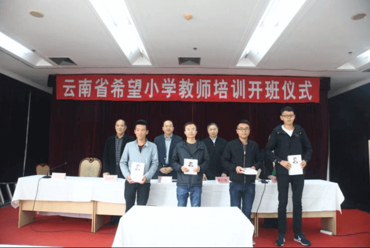
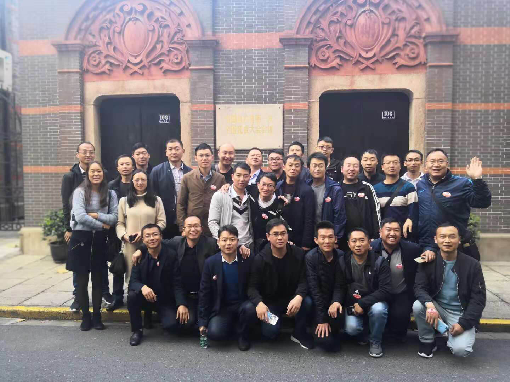

教育是民族振兴、社会进步的重要基石，是功在当代、利在千秋的德政工程。党的十九大从新时代坚持和发展中国特色社会主义的战略高度，作出了优先发展教育事业、加快教育现代化、建设教育强国的重大部署。
目前在深度贫困地区在乡村教师队伍建设方面还存在一些问题和困难，主要表现在财政可持续投入还有缺口、乡村教师建设体制机制还不够完善、乡村教师水平与社会期盼还有较大差距等方面。
让贫困地区的孩子们接受良好教育，是扶贫开发的重要任务。党和国家已经采取了一系列措施，推动贫困地区教育事业加快发展。
在落实市委第七次党代会报告中“大力支持希望工程建设”指示精神的感召下，上海希望工程于1998年自筹和斥资3800万元援建希望工程教师上海培训基地，并于2000年启动“西部万名教师培训行动”。
“教师培训”项目自实施以来，在社会各界的广泛支持和参与下，已为全国各地免费培训希望小学教师22000余名（含远程培训），极大地提高了革命老区、贫困地区、上海对口帮扶地区农村老师的素质和能力。通过短期培训，让常年在大山深处、穷乡僻壤教书的希望小学或山区小学校长和骨干教师，既开阔了眼界，又增长了知识，学到上海先进的教育理念和教学本领，也进一步增强了他们的从教信念，激发了他们树立终生学习的热情。

上海希望工程教师培训项目，已成为一个品牌项目，受到越来越多的关注。近年来，云南、大连、河南等省青基会与上海青基会、上海希望办合作，组织当地教师来沪参加培训。博世中国、联合汽车电子等大型企业陆续牵手上海希望工程，针对企业资助校开展多期培训，受到了地方、学校及老师的高度好评。参加培训的老师在心得体会中纷纷提到：“通过来沪培训，感触颇深，受益匪浅。自己感觉就像和所有老师融合在一起，翱翔在知识的海洋中，陶醉不已，流连忘返。不仅教学上长了见识，师德师风也得到了升华。非常感谢能有幸参加这次培训。”
上海市青少年发展基金会、上海市希望工程办公室将继续努力，致力于扶贫先扶智的原则，把实事做实，好事办好。